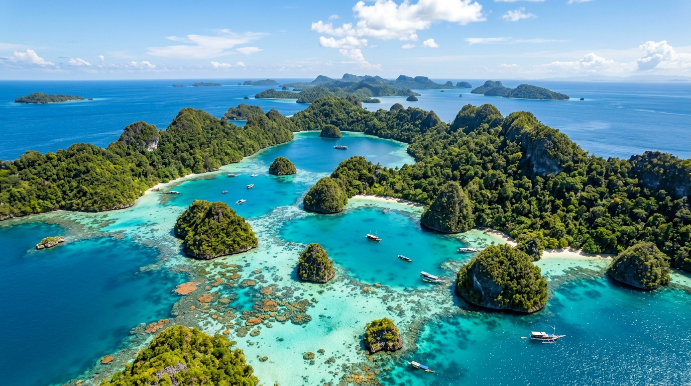
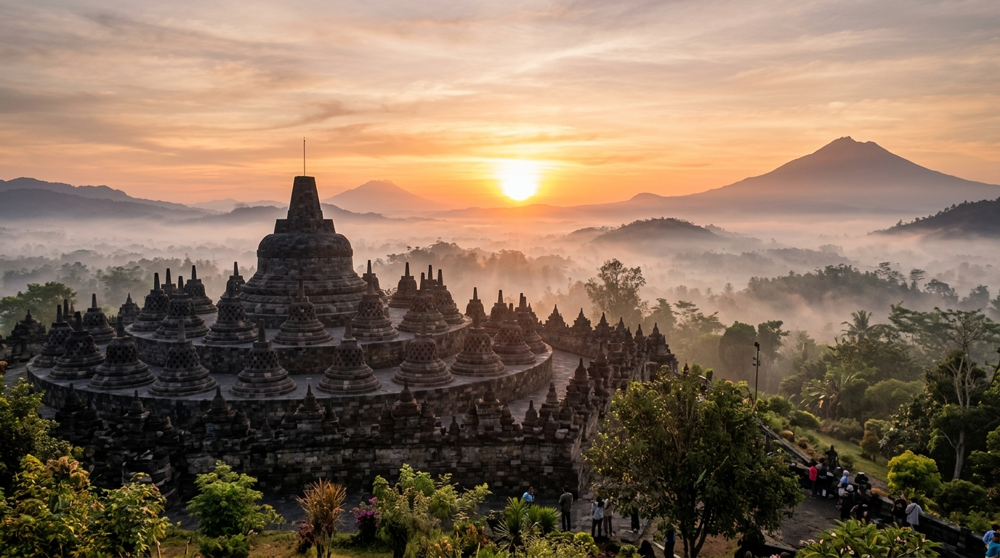
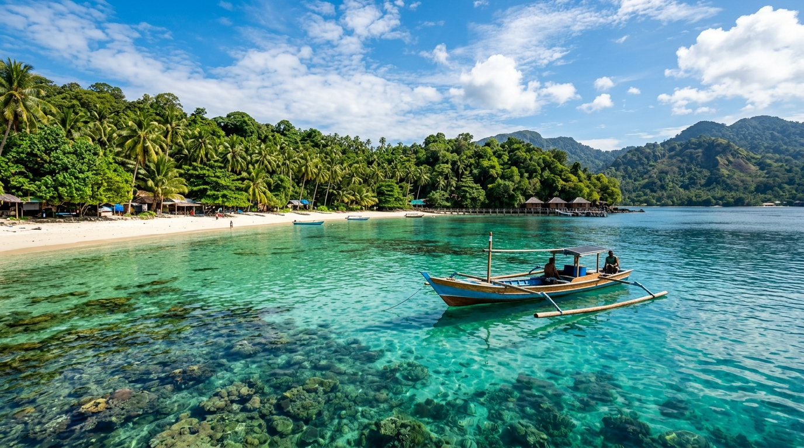
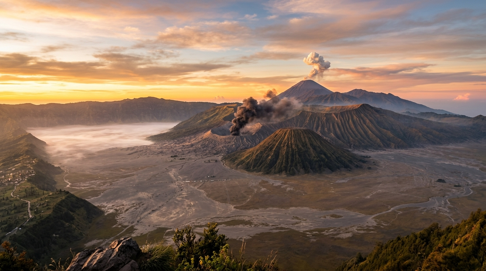

Papua Barat DayaBahari & Cagar Laut
Kepulauan Raja Ampat
Gugusan pulau karang zamrud dengan keanekaragaman hayati bawah laut terkaya di dunia.
Rencanakan liburan impian, temukan surga tersembunyi, hingga telusuri filosofi adat dan kuliner legendaris Indonesia bersama Aruna, pemandu wisata virtual pribadimu.
Pilih destinasi favoritmu dan tanyakan langsung informasi lengkapnya kepada Aruna dengan satu klik.

Papua Barat DayaGugusan pulau karang zamrud dengan keanekaragaman hayati bawah laut terkaya di dunia.

Jawa TengahMonumen Buddha terbesar di dunia yang berdiri megah sejak abad ke-8 di perbukitan Menoreh.

AcehSurga bahari di ujung barat Nusantara dengan perairan toska jernih, spot snorkeling Pulau Rubiah, dan Tugu Kilometer Nol.

Jawa TimurPanorama kawah aktif nan magis di tengah kaldera raksasa, lautan pasir berbisik, dan bukit teletubbies.
Lebih dari sekadar pencarian biasa, Aruna memahami konteks budaya dan kebutuhan unik setiap wisatawan.
Susun jadwal harian otomatis yang disesuaikan dengan minatmu, mulai dari liburan santai keluarga hingga petualangan solo backpacker.
Temukan rempah rahasia, warung legendaris, serta hidangan tradisional tersembunyi yang direkomendasikan langsung oleh tradisi lokal.
Pelajari norma sopan santun, makna filosofis tarian sakral, arsitektur rumah adat, dan sejarah warisan leluhur nusantara.
Mendukung dialog multi-putaran interaktif dengan pemahaman bahasa Indonesia yang natural dan ramah setiap saat.